Introduction
This chapter describes the Application Use-cases API of Advanced BOLOS Graphic Library.
This layer offers a simplified view of some typical use-cases of display in an Application running on Stax. For example, a use-case can be:
- Reviewing a transaction/message
- Reviewing details on a given data of a transaction/message
- Displaying pages of settings
A full description of each predefined use-case can be found in this document
Concepts
This layer uses the high-level API described in Predefined Pages API, but offers to developer more than a single page.
The goal is to simplify the usage of NBGL, but also to offer a better homogeneity across applications, by pushing developers to use common API for common use-cases.
So that not only the look of the pages but also their transitions look the same. Which should be a real help for end-users, getting more and more familiar with the user experience of applications.
Example 1: transaction review
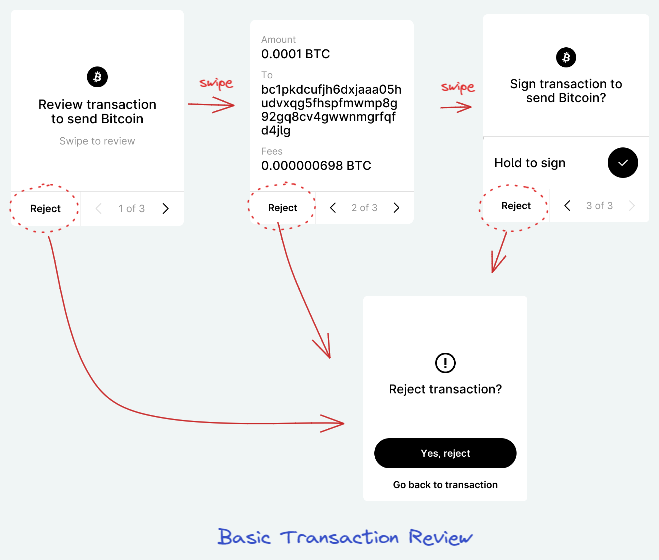
In this example, a transaction review consists in 3 successive pages, and can be seen as a use-case
Example 2: home & settings pages
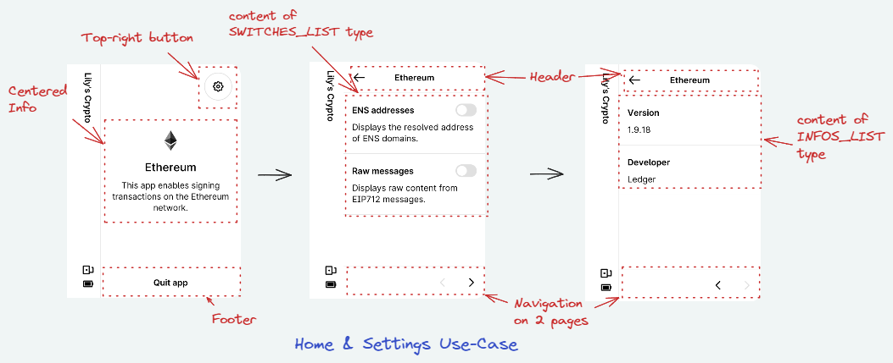
In this other example, displaying home page, then the settings and info consists in 3 pages, and can be seen as another use-case.
Use Cases
A few APIs are available to draw typical Use-Cases, such as:
- for Home Screen & Settings:
- for Individual pages:
- for most used reviews:
- for reviews with a warning prolog:
- for address verification:
- for keypad:
- for generic navigable content:
Some APIs have also been kept for backward compatibility, and for some rare cases:
Home & Settings screen Use Case
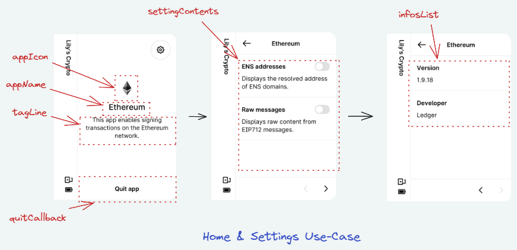
Ledger would like all application to have the same layout for home screen and settings/info, so the nbgl_useCaseHomeAndSettings() function enables to create such a set of page, the configurable parameters being:
- the application name (appName)
- the application icon (appIcon)
- the tagline, a text under app name (if NULL, it will be "This app enables signing transactions on the <appName> network.")
- the callback when touching quit application button
enum {
SWITCH2_TOKEN
};
.text = "ENS addresses",
.subText = "Displays the resolved address of ENS domains.",
.token = SWITCH1_TOKEN,
.tuneId = TUNE_TAP_CASUAL},
{.initState = true,
.text = "Raw messages",
.subText = "Displays raw content from EIP712 messages.",
.token = SWITCH2_TOKEN,
.tuneId = TUNE_TAP_CASUAL}
};
static const char *infoTypes[] = {"Version", "Developer"};
static const char *infoContents[] = {"1.9.18", "Ledger"};
static void controlsCallback(int token, uint8_t index, int page) {
if (token == SWITCH1_TOKEN) {
if (index == 0) {
}
else {
}
}
else if (token == SWITCH2_TOKEN) {
if (index == 0) {
}
else {
}
}
}
.content.switchesList.switches = switches,
.contentActionCallback = controlsCallback
};
= {.
nbInfos = 2, .infoTypes = infoTypes, .infoContents = infoContents};
void onQuit(void) {
}
void appMain(void) {
eth_icon,
NULL,
ð_settingContents,
ð_infosList,
NULL,
onQuit);
}
@ SWITCHES_LIST
list of switches with descriptions
struct PACKED__ nbgl_icon_details_s nbgl_icon_details_t
Represents all information about an icon.
void nbgl_useCaseHomeAndSettings(const char *appName, const nbgl_icon_details_t *appIcon, const char *tagline, const uint8_t initSettingPage, const nbgl_genericContents_t *settingContents, const nbgl_contentInfoList_t *infosList, const nbgl_homeAction_t *action, nbgl_callback_t quitCallback)
#define INIT_HOME_PAGE
Value to pass to nbgl_useCaseHomeAndSettings() initSettingPage parameter to initialize the use case o...
#define FIRST_USER_TOKEN
when using controls in page content (nbgl_pageContent_t), this is the first token value usable for th...
This structure contains data to build a INFOS_LIST content.
uint8_t nbInfos
number of elements in infoTypes and infoContents array
This structure contains info to build a switch (on the right) with a description (on the left),...
nbgl_state_t initState
initial state of the switch
This structure contains data to build a content.
const nbgl_content_t * contentsList
array of nbgl_content_t (nbContents items).
uint8_t nbSwitches
number of elements in switches and tokens array
nbgl_contentSwitchesList_t switchesList
SWITCHES_LIST type
Home & Settings screen with action button Use Case
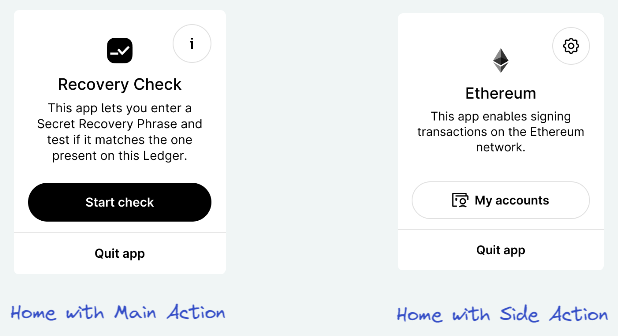
For some rare applications, one may need an action button in the Home screen, to perform either:
- The main action of the Application
- Or an side-action, as to display an address
The action argument of nbgl_useCaseHomeAndSettings() can be used for that. This structure (nbgl_homeAction_t) enables to specify:
- A text & an icon for the button
- A function to be called when the button is touched
- The type of button (either STRONG_HOME_ACTION for main action, in black, or SOFT_HOME_ACTION for side action, in white)
Confirmation Use Case
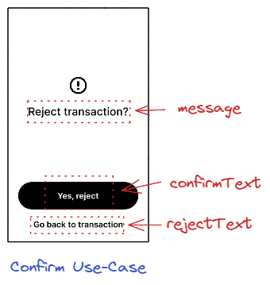
A confirmation use-case consists in a single modal page containing a fixed icon, a configurable message, a black button and a footer to make the choice, with configuration texts. The nbgl_useCaseConfirm() function enables to create such a page.
The callback argument is called when the button is touched.
When the footer is touched, this modal screen is simply dismissed, revealing the previous page on background.
Here is the code to display the example picture (and a status page for confirmation)
static void confirmationCallback(void) {
}
void onRejectTransaction(void) {
"Yes, Reject",
"Go back to transaction",
confirmationCallback);
}
void nbgl_useCaseConfirm(const char *message, const char *subMessage, const char *confirmText, const char *rejectText, nbgl_callback_t callback)
void nbgl_useCaseStatus(const char *message, bool isSuccess, nbgl_callback_t quitCallback)
Choice Use Case
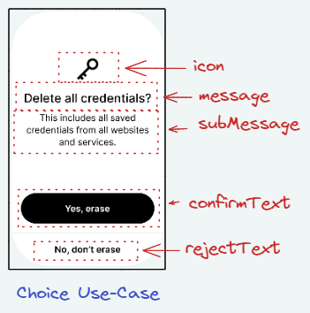
A choice use-case consists in a single page containing a fixed icon, a configurable icon, a configurable message, a black button and a footer to make the choice, with configuration texts. The nbgl_useCaseChoice() function enables to create such a page.
The callback argument is called when the button or the footer is touched. Its argument is a boolean which is true when button is touched, false when footer is touched.
Here is the code to display the example picture
static void onChoice(bool confirm) {
if (confirm) {
}
else {
}
}
void onRejectTransaction(void) {
"Delete all credentials?",
"This includes all saved\ncredentials from all websites\nand services.",
"Yes, erase",
"No, don't erase",
onChoice);
}
void nbgl_useCaseChoice(const nbgl_icon_details_t *icon, const char *message, const char *subMessage, const char *confirmText, const char *rejectString, nbgl_choiceCallback_t callback)
Status Use Case
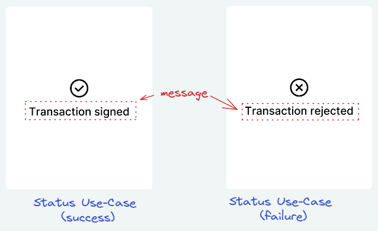
A status is a transient page, without control, to display during a short time, for example when a transaction is successfully signed. The nbgl_useCaseStatus() function enables to create such a page, with the following arguments:
- a message string to set in middle of page
- a boolean to indicate if true, that the message is drawn in a Ledger style (with corners) and select the icon
- a quit callback, called when timer times out (or the page is "tapped")
If it's a success status, a success tune will be automatically played.
Pre-defined review status Use Case
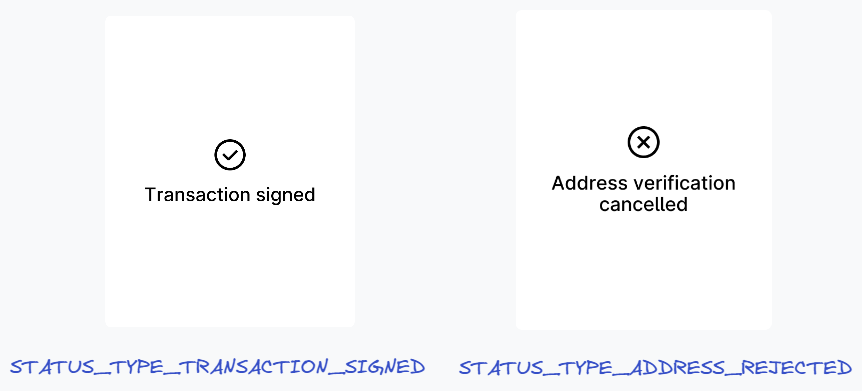
Similar as Status Use Case, this is used to display transient page, without control, during a short time, for example when a transaction is successfully signed. The nbgl_useCaseReviewStatus() function enables to create such a page, with the following arguments:
- a type of status (with predefined message)
- a quit callback, called when timer times out (or the page is "tapped")
If it's a success status, a success tune will be automatically played.
Review Use Case
In most cases, the developer may know all tag/value pairs of a transaction when it is submitted.
Thus, the number of pages is computed automatically and pages can be navigated forward and backward.
In case of a tag/value pair too long to be fully displayed, the more button will be automatically drawn and its handling automatically performed by NBGL by building a detailed modal view.
When the user taps on Reject in any page, a confirmation page is automatically drawned to let user confirm that he rejects the transaction. In this case, the given callback is called and it's up to app's developer to call nbgl_useCaseReviewStatus(), as in case of long-press.
The API to initiate the display of the series of pages is nbgl_useCaseReview(), providing:
- the type of operation to review (transaction, message or generic operation)
- the list of tag/value pairs (or a callback to get them one by one)
- the texts/icon to use in presentation page and in last page
- a callback called when the long press button on last page or reject confirmation is used. The callback's param is true for confirmation, false for rejection.
Here is the code to display something similar to example picture:
.nbPairs = 4,
};
static void onReviewResult(bool confirm) {
if (confirm) {
}
else {
}
}
void startReview(void) {
&pairList,
coinIcon,
"Review transaction\nto send coin",
NULL,
"Sign transaction to\nsend coin?",
onReviewResult);
}
void nbgl_useCaseReview(nbgl_operationType_t operationType, const nbgl_contentTagValueList_t *tagValueList, const nbgl_icon_details_t *icon, const char *reviewTitle, const char *reviewSubTitle, const char *finishTitle, nbgl_choiceCallback_t choiceCallback)
void nbgl_useCaseReviewStatus(nbgl_reviewStatusType_t reviewStatusType, nbgl_callback_t quitCallback)
@ STATUS_TYPE_TRANSACTION_REJECTED
@ STATUS_TYPE_TRANSACTION_SIGNED
@ TYPE_TRANSACTION
For operations transferring a coin or taken from an account to another.
This structure contains a list of [tag,value] pairs.
uint8_t nbMaxLinesForValue
if > 0, set the max number of lines for value field.
This structure contains a [tag,value] pair and possible extensions.
Here is another version of the example code, using a callback mechanism to get tag/value pairs:
.nbPairs = 4,
.pairs = NULL,
.callback = getPair,
.startIndex = 0
};
static void onReviewResult(bool confirm) {
if (confirm) {
}
else {
}
}
switch (index) {
case 0:
break;
case 1:
break;
case 2:
pair.
value =
"1.2345 BTC";
break;
case 3:
break;
}
return &pair;
}
void startReview(void) {
&pairList,
coinIcon,
"Review transaction\nto send coin",
NULL,
"Sign transaction to\nsend coin?",
onReviewResult);
}
const char * value
string giving the value name
const char * item
string giving the tag name
Light review Use Case
In some cases, the developer may want to display a review but with a less intense confirmation than a long-press button. A simple button is used in this case.
The API to initiate the display of the series of pages is nbgl_useCaseReviewLight(), providing:
- the list of tag/value pairs (or a callback to get them one by one)
- the texts/icon to use in presentation page and in last page
- a callback called when the long press button on last page or reject confirmation is used. The callback's param is true for confirmation, false for rejection.
Streaming review Use Case
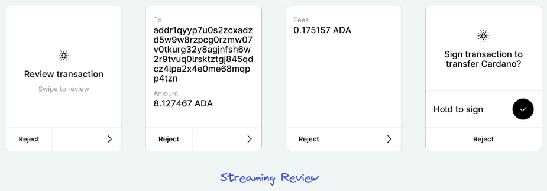
In some cases, the application cannot know all tag/value pairs of a transaction when the review is started.
In this case, what we call a streaming review can be used. The pages to display for each stream are computed automatically and pages can be navigated forward and backward (only within a stream for backward).
In case of a tag/value pair too long to be fully displayed, the more button will be automatically drawn and its handling automatically performed by NBGL by building a detailed modal view.
When the user taps on Reject in any page, a confirmation page is automatically drawned to let user confirm that he rejects the transaction. In this case, the given callback is called and it's up to app's developer to call nbgl_useCaseReviewStatus(), as in case of long-press.
The API to initiate the display of the series of pages is nbgl_useCaseReviewStreamingStart(), providing:
- the type of operation to review (transaction, message or generic operation)
- the texts/icon to use in presentation page
- a callback with one boolean parameter:
As long as there are new tag/value pairs to send, the API to call is either nbgl_useCaseReviewStreamingContinueExt() (if skip is possible) or nbgl_useCaseReviewStreamingContinue(), providing:
- the list of tag/value pairs (or a callback to get them one by one)
- a callback with one boolean parameter:
When there is no more data to send, the API to call is nbgl_useCaseReviewStreamingFinish(), providing:
- the title to use for last page (with long-press button)
- a callback called when the long press button on last page or reject confirmation is used. The callback's param is true for confirmation, false for rejection.
Here is the code to display something similar to example picture:
static void onReviewResult(bool confirm) {
if (confirm) {
}
else {
}
}
static void onTransactionContinue(bool askMore)
{
if (askMore) {
if (moreDataToSend(&pairsToSend)) {
}
else {
onReviewResult);
}
}
else {
onReviewResult(false);
}
}
void startReview(void) {
&C_ic_asset_cardano_64,
"Review transaction",
NULL,
onTransactionContinue);
}
void nbgl_useCaseReviewStreamingStart(nbgl_operationType_t operationType, const nbgl_icon_details_t *icon, const char *reviewTitle, const char *reviewSubTitle, nbgl_choiceCallback_t choiceCallback)
void nbgl_useCaseReviewStreamingFinish(const char *finishTitle, nbgl_choiceCallback_t choiceCallback)
void nbgl_useCaseReviewStreamingContinue(const nbgl_contentTagValueList_t *tagValueList, nbgl_choiceCallback_t choiceCallback)
Review with warning Use Case
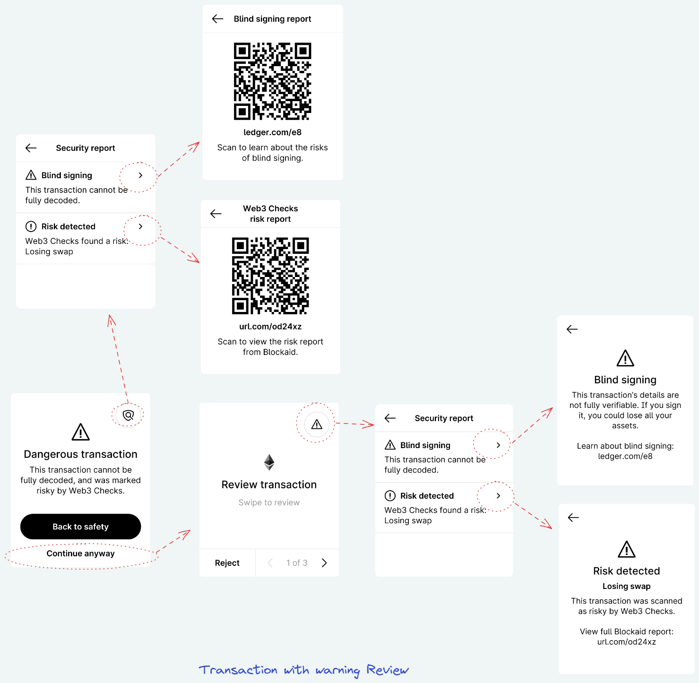
The review itself behaves like in Review Use Case. The main differences are:
- The review itself is preceded by a warning page offering the possibility to cancel the review ("Back to safety") or to start it ("Continue anyway")
- In the first and last pages of the actual review, a top-right button offers the possibility to get more information about the warning
The API to initiate the display of the series of pages is nbgl_useCaseAdvancedReview(), providing:
- the type of operation to review (transaction, message or generic operation)
- the list of tag/value pairs (or a callback to get them one by one)
- the texts/icon to use in presentation page and in last page
- the configuration to use for the warning (see nbgl_warning_t structure)
- a callback called when the long press button on last page or reject confirmation is used. The callback's param is true for confirmation, false for rejection.
- Note
- the recommended configuration for warning is the predefined one. In this case, one just has to fill the predefinedSet field of nbgl_warning_t with the appropriate warning causes (bitfield) and the reportProvider field with the name of the 3rd party providing the Web3Checks report, if necessary.
Here is the code to display something similar to example picture:
.nbPairs = 4,
};
static void onReviewResult(bool confirm) {
if (confirm) {
}
else {
}
}
void staticReview(void) {
&pairList,
coinIcon,
"Review transaction\nto send coin",
NULL,
"Sign transaction to\nsend coin?",
NULL,
&warningDesc,
onReviewResult);
}
@ BLIND_SIGNING_WARN
Blind signing.
@ W3C_RISK_DETECTED_WARN
Web3 Checks: Risk detected (see reportRisk field)
void nbgl_useCaseAdvancedReview(nbgl_operationType_t operationType, const nbgl_contentTagValueList_t *tagValueList, const nbgl_icon_details_t *icon, const char *reviewTitle, const char *reviewSubTitle, const char *finishTitle, const nbgl_tipBox_t *tipBox, const nbgl_warning_t *warning, nbgl_choiceCallback_t choiceCallback)
The necessary parameters to build a warning page preceding a review. One can either use predefinedSet...
const char * providerMessage
Dedicated provider message. Default one will be used if NULL.
const char * reportProvider
name of the security report provider, used in some strings
const char * reportUrl
URL of the report, used in some strings.
Here is another version of the example code, not using predefined text:
.nbPairs = 4,
};
static const char *const barListTexts[] = {"Blind signing", "Risk detected"};
static const char *const barListSubTexts[] = {"This transaction cannot be fully decoded.", "Web3 Checks found a risk:\nLosing swap"};
static const struct nbgl_warningDetails_s barListIntroDetails[] = {
{.title = "Back",
.qrCode = {.url = "ledger.com/e8", .text1 = "ledger.com/e8", .text2 = "Scan to learn about the risks of blind signing.", .centered = true}},
{.title = "Back",
.qrCode = {.url = "url.com/od24xz", .text1 = "url.com/od24xz", .text2 = "Scan to view the risk report from Blockaid.", .centered = true}}
};
static const struct nbgl_warningDetails_s barListIntroDetails[] = {
{.title = "Back",
.centeredInfo = {.icon = &C_Warning_64px, .title = "Blind signing", .description = "This transaction’s details are not fully verifiable. If you sign it, you could lose all your assets.\n\nLearn about blind signing:
ledger.com/e8"}},
{.title = "Back",
.centeredInfo = {.icon = &C_Warning_64px, .title = "Risk detected", .description = "This transaction was scanned as risky by Web3 Checks.\n\nView full Blockaid report:url.com/od24xz"}}
};
.title = "Dangerous transaction",
.description = "This transaction cannot be fully decoded, and was marked risky by Web3 Checks."
};
.
title =
"Security report",
.barList.nbBars = 2,
.barList.icons = barListIcons,
.barList.texts = barListTexts,
.barList.subTexts = barListSubTexts,
.barList.details = barListIntroDetails
};
.
title =
"Security report",
.barList.nbBars = 2,
.barList.icons = barListIcons,
.barList.texts = barListTexts,
.barList.subTexts = barListSubTexts,
.barList.details = barListReviewDetails
};
.introTopRightIcon = &PRIVACY_ICON,
.reviewTopRightIcon = &WARNING_ICON,
.introDetails = &warningIntroDetails,
.reviewDetails = &warningReviewDetails
};
static void onReviewResult(bool confirm) {
if (confirm) {
}
else {
}
}
void staticReview(void) {
&pairList,
coinIcon,
"Review transaction\nto send coin",
NULL,
"Sign transaction to\nsend coin?",
NULL,
&warningDesc,
onReviewResult);
}
@ CENTERED_INFO_WARNING
Centered info.
@ BAR_LIST_WARNING
list of touchable bars, to display sub-pages
This structure contains info to build a centered (vertically and horizontally) area,...
const nbgl_icon_details_t * icon
the icon (can be null)
The necessary parameters to build the page(s) displayed when the top-right button is touched in intro...
const char * title
text of the page (used to go back)
const nbgl_contentCenter_t * info
parameters to build the intro warning page, if not using pre-defined
Address Review Use Case
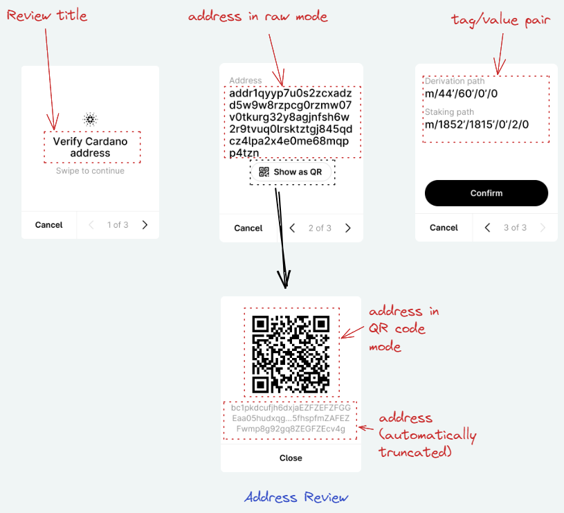
When an address needs to be confirmed, it can be displayed in a Address Review Use Case. After a title page, a second page is displayed with the raw address (as text). An extra button under the raw address enables to open a modal page to see the address as a QR code. Moreover, if extra information need to be displayed, for example a derivation path, it is provided in a second page, also containing a black button/Footer pair to choose to confirm or reject the address.
The nbgl_useCaseAddressReview() function enables to create such a set of pages, with the following parameters:
- the address to confirm (NULL terminated string)
- a callback called when button or footer is touched (if true, confirm, if false reject)
- the list of extra tag/value pairs
Here is the code to display something similar to example picture:
.nbPairs = 2,
};
static void displayAddressCallback(bool confirm) {
if (confirm) {
}
else {
}
}
void app_ethereumVerifyAddress(void) {
&pairList
myAppIcon,
"Verify MyCoin\naddress",
NULL,
"Cancel",
appMain);
}
@ STATUS_TYPE_ADDRESS_REJECTED
@ STATUS_TYPE_ADDRESS_VERIFIED
void nbgl_useCaseAddressReview(const char *address, const nbgl_contentTagValueList_t *additionalTagValueList, const nbgl_icon_details_t *icon, const char *reviewTitle, const char *reviewSubTitle, nbgl_choiceCallback_t choiceCallback)
Spinner Use Case
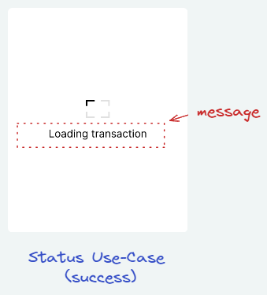
This Use Case is simply to display a static waiting page
The nbgl_useCaseSpinner() function enables to create such a page, without any parameters.
Keypad Use Case
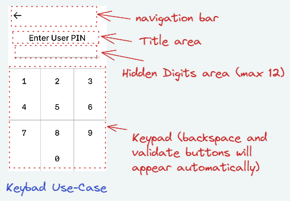
We have here 2 different variants, allowing to show or hide the entered digits.
When a pincode is requested, a default keypad can be displayed, with hidden digits. As shown on the image above, it consists of:
- a navigation bar at the top
- a title area, specifying the type of pin code or operation requested
- a hidden Digits area (the max nb of supported digits is 12)
- the keypad at the bottom
The nbgl_useCaseKeypad() function enables to create such page, with the following parameters:
- a title
- min and max pin code lengths
- a boolean to request a shuffled keypad
- a boolean to request hidden digits
- callbacks for navigation and pin validation
- Note
- The backspace and validate buttons will be shown or hidden automatically.
Here is the code to display something similar to example picture:
static void validate_pin(const uint8_t *pinentry, uint8_t length) {
}
static void quit_cb() {
}
void ui_menu_pinentry_display(unsigned int value) {
4,
4,
false,
true,
validate_pin,
quit_cb);
}
void nbgl_useCaseKeypad(const char *title, uint8_t minDigits, uint8_t maxDigits, bool shuffled, bool hidden, nbgl_pinValidCallback_t validatePinCallback, nbgl_callback_t backCallback)
Refreshing screen
After having drawn graphic objects in framebuffer, all functions of this API automatically refresh the screen. So no need to call nbgl_refresh().